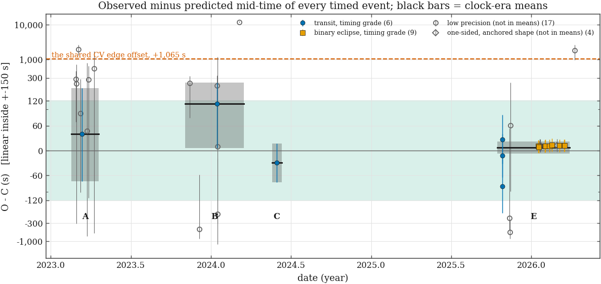
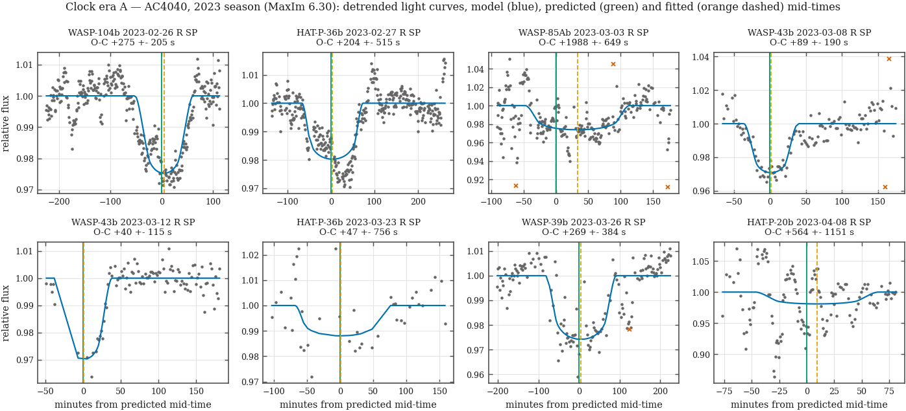
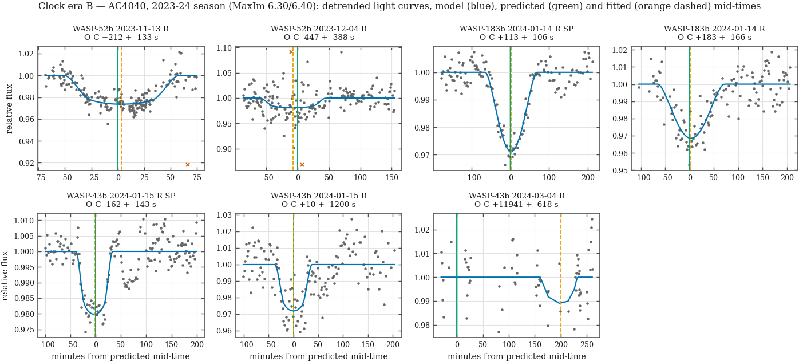
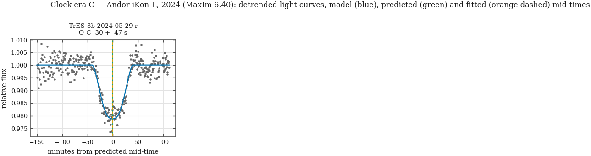
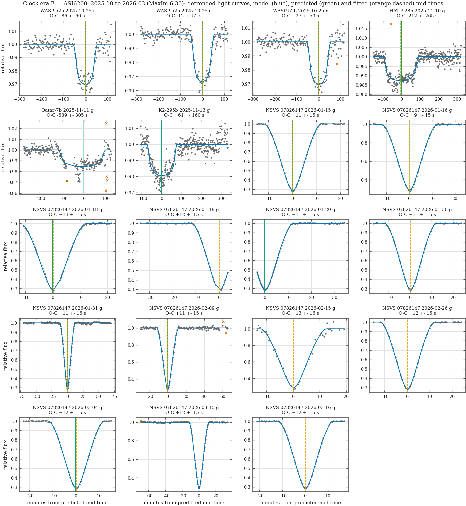
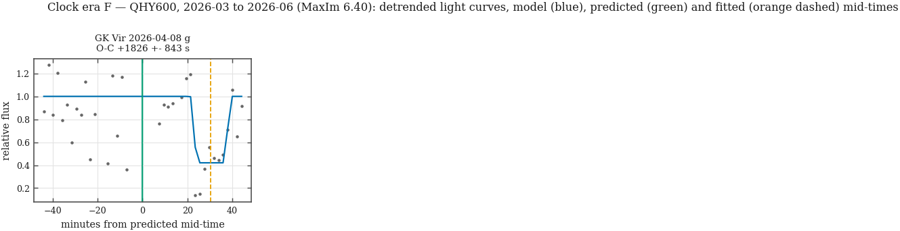
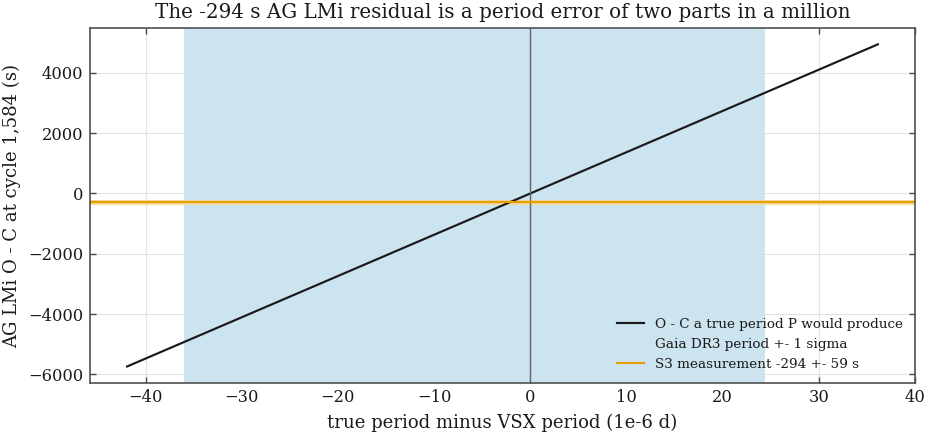
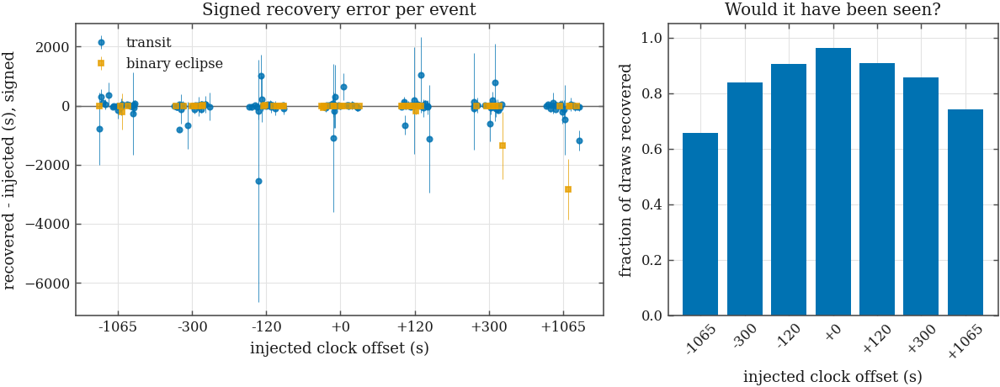
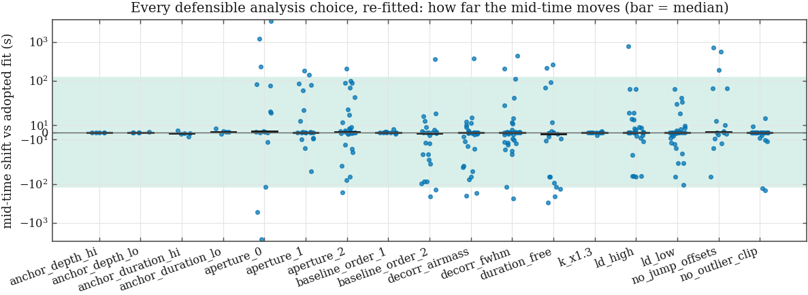

16 independent series (38 with twins) timed
on literature standards across 5 clock eras · 2 of 5 measured clock eras pass |O−C| < 120 s at 2σ; the largest |O−C| + 2σ of any measured era is 325 s
· built 2026-10-03T12:21Z
(S3b v1.0 (2026-10-03), commit
916243b)
· S3, the time axis this checks
S3 proved what a header stamp means. It could not prove the stamp is true: both header clock cards come from the same PC, and its one astrophysical check carried a ±4,121 s ephemeris envelope. The plan review (OA.E6, DS.F10, RF.M4) noted that two polars show the same ~1,065 s offset from their catalogue ephemerides — exactly what a clock error would do.
Method. The archive holds transits of well-timed exoplanets and eclipses of post-common-envelope binaries. For each fully covered event: differential aperture photometry on the raw frames; mid-exposure BJD_TDB recomputed at the star’s own coordinates; a limb-darkened occultation model located by a blind grid over the whole run (the prediction never tells the fit where to look) and refined by least squares; a 300-draw moving-block residual bootstrap (10.0 min blocks) and a prayer-bead permutation, the larger of which is adopted; then O−C against the literature ephemeris propagated with its own uncertainty. O−C > 0 means our stamps are late.

Every canonical science series of at least 20 frames and 0.5 h whose field centre lies within 12′ of a clock standard was examined: 74 series, 75 predicted events. An event is admitted when the prediction puts it inside the run with 0.15 h to spare on each side (0.05 h for the deep, sharp binary eclipses) or misses that by no more than 2130 s — the selection must not assume the clock it is testing, so borderline events are measured and the two-sided-coverage decision is taken after the blind fit — and its ephemeris predicts it to better than 60 s: 54 events in 53 series. Refusals: ephemeris prediction looser than 60 s: 1; event outside the run even allowing a clock error: 20.
Of the admitted events:
ok: 33; one_sided_coverage: 7; ok_anchored_shape: 5; photometry refused: reference frame has no WCS: 3; photometry refused: no detection within 20" of the target position: 2; depth_inconsistent: 2; target_saturated: 1; no_comparison_stars: 1.
9,187 of 9,308 frames were registered and measured.
A status other than ok is a refusal by a rule fixed before any
O−C was computed (one-sided coverage after the fit, a depth outside
0.4–2.5× the catalogue
depth, the target over the native-pixel saturation veto on most frames, or
no stable comparison stars).
Raw frames are calibrated with the archive’s own master dark (same readout mode, same exposure time, never scaled) and master flat (same mode, same filter), the nearest in time of each — the same rule the CV campaign uses. The telescope was not guided for most of these runs: stars walk tens of pixels and are re-centred in jumps, and without a flat every jump is a step in the light curve as large as a transit. The flats are months old in places (ages below); what they fail to remove is handled in the fit, where every re-pointing found in the target’s centroid track (a jump of more than 5 px between consecutive frames) gets its own offset. Saturation is judged on the raw pixels. Series refused at this step: no detection within 20" of the target position (2); reference frame has no WCS (3).
| era | reduction applied | series | flat age (d) | dark age (d) |
|---|---|---|---|---|
| A | dark+flat | 10 | 183–234 | 14–55 |
| B | dark+flat | 15 | 3–138 | 1–137 |
| C | flat_only | 1 | 10–10 | — |
| E | dark+flat | 17 | 2–54 | 2–54 |
| E | flat_only | 2 | 1–3 | — |
| F | none | 1 | — | — |
| F | server_reduced | 2 | — | — |
| standard | role | T0 (BJD_TDB) | ± (d) | P (d) | ± (d) | reference |
|---|---|---|---|---|---|---|
| GK Vir | primary | 2442543.837450 | 3.0e-05 | 0.344330847 | 8.0e-10 | Yates et al. 2026, MNRAS 547, stag358 (arXiv:2602.17800), Table 1 — best-fit linear ephemeris of the long-term timing programme |
| GK Vir | alt | 2442543.837714 | 3.0e-06 | 0.344330839 | 9.2e-11 | Parsons et al. 2010, MNRAS 407, 2362 (arXiv:1005.3958) |
| HAT-P-20b | primary | 2458304.158616 | 4.8e-05 | 2.875317895 | 8.6e-08 | ExoClock database (Kokori et al. 2023, ApJS 265, 4), ephemeris ref OSF.IO, retrieved 2026-10-03 |
| HAT-P-20b | alt | 2455598.484820 | 3.2e-04 | 2.875318600 | 2.0e-07 | Bonomo et al. 2017 (NASA Exoplanet Archive) |
| HAT-P-28b | primary | 2458971.218370 | 2.0e-04 | 3.257212690 | 5.0e-07 | ExoClock database (Kokori et al. 2023, ApJS 265, 4), ephemeris ref OSF.IO, retrieved 2026-10-03 |
| HAT-P-28b | alt | 2455417.599080 | 5.3e-04 | 3.257215000 | 7.0e-06 | Bonomo et al. 2017 (NASA Exoplanet Archive) |
| HAT-P-36b | primary | 2458442.869734 | 7.4e-05 | 1.327346889 | 6.9e-08 | ExoClock database (Kokori et al. 2023, ApJS 265, 4), ephemeris ref OSF.IO, retrieved 2026-10-03 |
| HAT-P-36b | alt | 2457138.087590 | 1.2e-04 | 1.327346860 | 1.3e-07 | Ivshina & Winn 2022 (NASA Exoplanet Archive) |
| K2-295b | primary | 2457777.778330 | 1.2e-04 | 4.024890270 | 5.5e-07 | ExoClock database (Kokori et al. 2023, ApJS 265, 4), ephemeris ref OSF.IO, retrieved 2026-10-03 |
| K2-295b | alt | 2457395.414050 | 1.2e-06 | 4.024867000 | 1.5e-05 | Smith et al. 2019 (NASA Exoplanet Archive) |
| NSVS 07826147 | primary | 2455611.926571 | 1.7e-06 | 0.161770446 | 5.0e-11 | Basturk et al. 2026, MNRAS (accepted), arXiv:2602.09925 — linear ephemeris from 618 primary minima through 2025 |
| NSVS 07826147 | alt | 2455611.926576 | 5.0e-06 | 0.161770447 | 1.0e-09 | Pulley et al. 2025, MNRAS 544, 24 (arXiv:2507.06748) — quadratic ephemeris, data through June 2025 |
| Qatar-7b | primary | 2458650.895810 | 1.5e-04 | 2.032023550 | 3.6e-07 | ExoClock database (Kokori et al. 2023, ApJS 265, 4), ephemeris ref OSF.IO, retrieved 2026-10-03 |
| Qatar-7b | alt | 2458063.641450 | 1.8e-04 | 2.032069000 | 1.8e-05 | Ivshina & Winn 2022 (NASA Exoplanet Archive) |
| TrES-3b | primary | 2457657.754796 | 2.3e-05 | 1.306186314 | 3.3e-08 | ExoClock database (Kokori et al. 2023, ApJS 265, 4), ephemeris ref OSF.IO, retrieved 2026-10-03 |
| TrES-3b | alt | 2454185.911149 | 5.3e-05 | 1.306186280 | 2.0e-08 | Mannaday et al. 2022 (NASA Exoplanet Archive) |
| WASP-104b | primary | 2457950.868907 | 1.7e-05 | 1.755405770 | 1.2e-07 | ExoClock database (Kokori et al. 2023, ApJS 265, 4), ephemeris ref OSF.IO, retrieved 2026-10-03 |
| WASP-104b | alt | 2457935.070228 | 1.1e-05 | 1.755405630 | 1.1e-07 | Chen et al. 2021 (NASA Exoplanet Archive) |
| WASP-183b | primary | 2459732.825600 | 2.3e-04 | 4.111766900 | 2.9e-06 | ExoClock database (Kokori et al. 2023, ApJS 265, 4), ephemeris ref OSF.IO, retrieved 2026-10-03 |
| WASP-183b | alt | 2459259.972780 | 4.5e-04 | 4.111764800 | 6.8e-06 | Ivshina & Winn 2022 (NASA Exoplanet Archive) |
| WASP-39b | primary | 2459661.843065 | 2.2e-05 | 4.055280280 | 1.4e-07 | ExoClock database (Kokori et al. 2023, ApJS 265, 4), ephemeris ref OSF.IO, retrieved 2026-10-03 |
| WASP-39b | alt | 2455342.969600 | 1.4e-04 | 4.055279990 | 7.0e-07 | Fischer et al. 2016 (NASA Exoplanet Archive) |
| WASP-43b | primary | 2457650.409087 | 2.7e-05 | 0.813474057 | 1.4e-08 | ExoClock database (Kokori et al. 2023, ApJS 265, 4), ephemeris ref OSF.IO, retrieved 2026-10-03 |
| WASP-43b | alt | 2456897.132010 | 4.0e-05 | 0.813474070 | 2.0e-08 | Murphy et al. 2023 (NASA Exoplanet Archive) |
| WASP-52b | primary | 2457058.773584 | 5.5e-05 | 1.749781004 | 8.5e-08 | ExoClock database (Kokori et al. 2023, ApJS 265, 4), ephemeris ref OSF.IO, retrieved 2026-10-03 |
| WASP-52b | alt | 2457399.980720 | 1.7e-04 | 1.749780820 | 3.9e-07 | Ivshina & Winn 2022 (NASA Exoplanet Archive) |
| WASP-85Ab | primary | 2456969.633888 | 1.6e-05 | 2.655674329 | 7.3e-08 | ExoClock database (Kokori et al. 2023, ApJS 265, 4), ephemeris ref OSF.IO, retrieved 2026-10-03 |
| candidate | what | why it is not a clock |
|---|---|---|
| V2301 Oph | eclipsing polar; 2025-04/05 (clock era D) | published ephemerides disagree by minutes at 2025: the quadratic term of Ramsay & Cropper 2007 (MNRAS 379, 1209), 3.18(62)e-13 d per cycle^2, alone is uncertain by ~140 s after 162,000 cycles; frames are 240 s exposures across a ~5 min eclipse |
| NN Ser | WD + dM; 2026-04-01 (clock era F) | two recent linear ephemerides (Ozdonmez et al. 2023; Yates et al. 2026) differ by ~270 s at 2026 — the star's own period variation exceeds the 120 s criterion; frames are 180 s exposures |
| QS Vir | WD + dM; 2023-04, 2026-04/05 | eclipse-timing variations of order +-100 s about any linear ephemeris (Parsons et al. 2010): not a clock at 120 s |
| DE CVn | WD + dM; 2026-03/04 (clock era F) | only one long-baseline ephemeris found (Yates et al. 2026) and that paper states the systems deviate significantly from linear; no second ephemeris to measure the disagreement |
| HAT-P-18 b (2024-05-28), WASP-80 b (2025-06-22) | transits | no predicted transit falls inside the observed window (the census table records the nearest event and its margins) |





| era | standard | night | filter | mode | tree | cycle | O−C (s) | bootstrap | prayer bead | formal | model | ephem. | total ± | χ²/dof | depth / expected | points (clipped) | re-pointing offsets | target frames over veto | 2nd ephemeris − 1st (s) | in mean |
|---|---|---|---|---|---|---|---|---|---|---|---|---|---|---|---|---|---|---|---|---|
| A | WASP-104b | 2023-02-26 | R | High Gain StackPro | rawimage | 1,169 | +274.6 | 140.4 | 174.9 | 28.7 | 106.6 | 12.2 | 205.1 | 1253.8/330 = 3.80 ⚠ | 0.0248 / 0.0151 | 334 (0) | 0 | 0 | -16.6 | low precision |
| A | HAT-P-36b | 2023-02-27 | R | High Gain StackPro | rawimage | 1,176 | +203.8 | 182.1 | 235.8 | 39.5 | 457.9 | 9.5 | 515.1 | 1316.4/350 = 3.76 ⚠ | 0.0197 / 0.0189 | 356 (0) | 2 | 0 | -18.6 | low precision |
| A | WASP-85Ab | 2023-03-03 | R | High Gain StackPro | rawimage | 1,144 | +1987.9 | 633.1 | 568.0 | 164.8 | 142.0 | 7.3 | 648.9 | 962.5/232 = 4.15 ⚠ | 0.0261 / 0.0231 | 245 (3) | 6 | 0 | — | low precision |
| A | WASP-43b | 2023-03-08 | R | High Gain StackPro | rawimage | 2,904 | +89.5 | 125.3 | 162.2 | 35.3 | 99.6 | 4.2 | 190.4 | 318.8/119 = 2.68 ⚠ | 0.0291 / 0.0270 | 125 (2) | 0 | 0 | -4.4 | low precision |
| A | WASP-43b | 2023-03-12 | R | High Gain StackPro | rawimage | 2,909 | +40.1 | 63.7 | 57.8 | 52.4 | 95.2 | 4.2 | 114.6 | 133.9/95 = 1.41 | 0.0299 / 0.0270 | 99 (0) | 0 | 0 | -4.4 | yes |
| A | HAT-P-36b | 2023-03-23 | R | High Gain StackPro | rawimage | 1,194 | +47.0 | 490.8 | 750.2 | 381.6 | 95.9 | 9.6 | 756.4 | 49.8/36 = 1.38 | 0.0120 / 0.0189 | 41 (0) | 1 | 1 | -18.6 | low precision |
| A | WASP-39b | 2023-03-26 | R | High Gain StackPro | rawimage | 91 | +269.3 | 211.5 | 366.6 | 76.4 | 114.8 | 2.2 | 384.1 | 788.5/145 = 5.44 ⚠ | 0.0258 / 0.0248 | 150 (1) | 0 | 0 | -26.1 | low precision |
| A | HAT-P-20b | 2023-04-08 | R | High Gain StackPro | rawimage | 605 | +564.4 | 1149.1 | 880.7 | 228.8 | 72.4 | 6.1 | 1151.3 | 1671.6/127 = 13.16 ⚠ | 0.0190 / 0.0180 | 132 (0) | 1 | 0 | +123.8 | low precision |
| B | WASP-52b | 2023-11-13 | R | High Gain | rawimage | 1,831 | +211.9 | 108.5 | 109.0 | 84.6 | 75.5 | 14.3 | 133.4 | 193.6/192 = 1.01 | 0.0264 / 0.0300 | 199 (1) | 2 | 38 | -39.8 | low precision |
| B | WASP-52b | 2023-12-04 | R | High Gain | rawimage | 1,843 | -446.5 | 254.3 | 242.6 | 208.7 | 293.0 | 14.3 | 388.2 | 397.8/189 = 2.10 ⚠ | 0.0192 / 0.0300 | 195 (2) | 0 | 104 | -40.0 | low precision |
| B | WASP-183b | 2024-01-14 | R | High Gain StackPro | rawimage | 144 | +112.8 | 87.0 | 96.8 | 55.5 | 14.1 | 41.2 | 106.1 | 190.6/142 = 1.34 | 0.0287 / 0.0226 | 146 (0) | 0 | 0 | -14.7 | yes |
| B | WASP-183b | 2024-01-14 | R | High Gain | rawimage | 144 | +183.1 | 150.8 | 100.2 | 109.9 | 57.1 | 41.2 | 166.4 | 203.9/123 = 1.66 | 0.0315 / 0.0226 | 127 (0) | 0 | 0 | -14.7 | low precision |
| B | WASP-43b | 2024-01-15 | R | High Gain StackPro | rawimage | 3,289 | -162.0 | 92.3 | 141.5 | 35.1 | 18.3 | 4.6 | 142.7 | 436.3/166 = 2.63 ⚠ | 0.0201 / 0.0270 | 170 (0) | 0 | 0 | -3.9 | low precision |
| B | WASP-43b | 2024-01-15 | R | High Gain | rawimage | 3,289 | +10.1 | 149.8 | 296.0 | 92.0 | 1162.5 | 4.6 | 1199.6 | 176.6/141 = 1.25 | 0.0280 / 0.0270 | 145 (0) | 0 | 0 | -3.9 | low precision |
| B | WASP-43b | 2024-03-04 | R | High Gain | rawimage | 3,349 | +11941.3 | 318.2 | 616.1 | 220.1 | 47.9 | 4.7 | 618.0 | 96.9/64 = 1.51 | 0.0109 / 0.0270 | 68 (0) | 0 | 214 | -3.9 | low precision |
| C | TrES-3b | 2024-05-29 | r | 1MHz High Sensitivity 16-bit | rawimage | 2,146 | -29.6 | 45.2 | 40.1 | 28.6 | 9.6 | 6.4 | 46.7 | 375.4/357 = 1.05 | 0.0212 / 0.0237 | 362 (0) | 1 | 0 | -50.8 | yes |
| E | WASP-52b | 2025-10-25 | i | Mode0 | rawimage | 2,238 | -86.1 | 55.5 | 58.2 | 60.0 | 25.9 | 17.1 | 66.0 | 171.8/167 = 1.03 | 0.0305 / 0.0300 | 174 (0) | 3 | 0 | -46.3 | yes |
| E | WASP-52b | 2025-10-25 | g | Mode0 | rawimage | 2,238 | -12.4 | 38.9 | 49.0 | 29.6 | 6.4 | 17.1 | 52.3 | 266.1/178 = 1.49 | 0.0337 / 0.0300 | 184 (0) | 2 | 0 | -46.3 | yes |
| E | WASP-52b | 2025-10-25 | r | Mode0 | rawimage | 2,238 | +27.2 | 44.8 | 49.5 | 46.2 | 26.2 | 17.1 | 58.6 | 206.4/168 = 1.23 | 0.0304 / 0.0300 | 176 (1) | 3 | 0 | -46.3 | yes |
| E | HAT-P-28b | 2025-11-10 | g | Mode0 | rawimage | 620 | -211.7 | 90.9 | 118.7 | 57.3 | 234.6 | 31.9 | 264.9 | 427.8/362 = 1.18 | 0.0128 / 0.0154 | 370 (1) | 3 | 0 | +320.3 | low precision |
| E | Qatar-7b | 2025-11-11 | g | Mode0 | rawimage | 1,152 | -539.2 | 160.6 | 220.0 | 61.7 | 207.6 | 38.1 | 304.8 | 746.6/261 = 2.86 ⚠ | 0.0154 / 0.0149 | 272 (5) | 2 | 0 | +5697.2 | low precision |
| E | K2-295b | 2025-11-13 | g | Mode0 | rawimage | 799 | +60.7 | 88.1 | 143.1 | 50.5 | 58.7 | 39.4 | 159.6 | 473.2/359 = 1.32 | 0.0195 / 0.0209 | 364 (0) | 1 | 0 | -1771.9 | low precision |
| E | NSVS 07826147 | 2026-01-15 | g | Mode0 | rawimage | 33,659 | +10.7 | 0.3 | 0.2 | 5.5 | 0.2 | 0.2 | 15.0 | 0.5/54 = 0.01 ⚠ | 0.7140 / 0.6519 | 60 (0) | 0 | 0 | -5.3 | yes |
| E | NSVS 07826147 | 2026-01-16 | g | Mode0 | rawimage | 33,665 | +8.9 | 0.8 | 0.6 | 5.4 | 1.0 | 0.2 | 15.1 | 1.1/54 = 0.02 ⚠ | 0.7126 / 0.6519 | 60 (0) | 0 | 0 | -5.3 | yes |
| E | NSVS 07826147 | 2026-01-18 | g | Mode0 | rawimage | 33,678 | +13.2 | 1.1 | 0.8 | 3.6 | 0.8 | 0.2 | 15.1 | 4.1/72 = 0.06 ⚠ | 0.7126 / 0.6519 | 75 (0) | 0 | 0 | -5.3 | anchored |
| E | NSVS 07826147 | 2026-01-19 | g | Mode0 | rawimage | 33,684 | +11.9 | 0.9 | 1.2 | 1.5 | 1.5 | 0.2 | 15.1 | 15.6/57 = 0.27 ⚠ | 0.7126 / 0.6519 | 60 (0) | 0 | 0 | -5.3 | anchored |
| E | NSVS 07826147 | 2026-01-20 | g | Mode0 | rawimage | 33,690 | +11.4 | 1.2 | 1.0 | 1.9 | 1.4 | 0.2 | 15.1 | 12.4/82 = 0.15 ⚠ | 0.7126 / 0.6519 | 85 (0) | 0 | 0 | -5.3 | anchored |
| E | NSVS 07826147 | 2026-01-30 | g | Mode0 | rawimage | 33,752 | +10.5 | 0.6 | 0.4 | 4.7 | 0.3 | 0.2 | 15.0 | 0.8/59 = 0.01 ⚠ | 0.7096 / 0.6519 | 65 (0) | 0 | 0 | -5.4 | yes |
| E | NSVS 07826147 | 2026-01-31 | g | Mode0 | rawimage | 33,758 | +11.5 | 2.0 | 2.3 | 1.0 | 0.8 | 0.2 | 15.2 | 301.6/191 = 1.58 | 0.7100 / 0.6519 | 198 (0) | 1 | 0 | -5.4 | yes |
| E | NSVS 07826147 | 2026-02-09 | g | Mode0 | rawimage | 33,813 | +11.4 | 1.2 | 1.2 | 2.2 | 0.3 | 0.2 | 15.1 | 119.3/134 = 0.89 | 0.7200 / 0.6519 | 143 (2) | 1 | 0 | -5.4 | yes |
| E | NSVS 07826147 | 2026-02-15 | g | Mode0 | rawimage | 33,851 | +13.2 | 3.8 | 5.2 | 7.8 | 0.8 | 0.2 | 15.9 | 19.7/37 = 0.53 | 0.7146 / 0.6519 | 43 (0) | 0 | 0 | -5.4 | yes |
| E | NSVS 07826147 | 2026-02-26 | g | Mode0 | rawimage | 33,919 | +12.4 | 0.6 | 0.5 | 5.4 | 0.4 | 0.2 | 15.0 | 0.2/57 = 0.00 ⚠ | 0.7126 / 0.6519 | 60 (0) | 0 | 0 | -5.4 | anchored |
| E | NSVS 07826147 | 2026-03-04 | g | Mode0 | rawimage | 33,956 | +11.9 | 0.4 | 0.5 | 5.2 | 0.3 | 0.2 | 15.0 | 0.9/54 = 0.02 ⚠ | 0.7114 / 0.6519 | 60 (0) | 0 | 0 | -5.4 | yes |
| E | NSVS 07826147 | 2026-03-15 | g | Mode0 | rawimage | 34,024 | +12.1 | 1.0 | 1.3 | 0.7 | 0.7 | 0.2 | 15.1 | 164.3/162 = 1.01 | 0.7145 / 0.6519 | 169 (1) | 0 | 0 | -5.5 | yes |
| E | NSVS 07826147 | 2026-03-16 | g | Mode0 | rawimage | 34,030 | +12.1 | 0.3 | 0.2 | 3.8 | 0.2 | 0.2 | 15.0 | 0.8/54 = 0.02 ⚠ | 0.7120 / 0.6519 | 60 (0) | 0 | 0 | -5.5 | yes |
| F | GK Vir | 2026-04-08 | g | Fast | rawimage | 54,006 | +1826.3 | 43.2 | 39.6 | 72.7 | 842.2 | 4.5 | 843.4 | 22.3/28 = 0.80 | 0.5794 / 0.8000 | 35 (0) | 1 | 0 | -15.6 | low precision |
| F | GK Vir | 2026-04-19 | g | Fast | reduced | 54,038 | +1.7 | 0.9 | 0.9 | 1.0 | 0.8 | 4.5 | 16.3 | 38.8/29 = 1.34 | 0.9923 / 0.8000 | 36 (0) | 1 | 0 | -15.6 | yes |
| F | NSVS 07826147 | 2026-05-13 | g | Fast | reduced | 34,387 | +9.3 | 2.0 | 2.4 | 1.7 | 3.9 | 0.2 | 15.7 | 79.2/82 = 0.97 | 0.7126 / 0.6519 | 85 (0) | 0 | 0 | -5.6 | anchored |
Errors are in seconds. bootstrap and prayer bead are the two red-noise estimates (the larger is the statistical error); formal is the least-squares value, shown only so the reader can see how much correlated noise inflates it; model is the root-mean-square mid-time shift over the analysis variants of section 7. χ² uses empirical point errors from successive differences, so a ratio above one measures correlated noise the white-noise estimate cannot see: 9 of 38 fits have χ²/dof > 2 and 9 have χ²/dof < 0.5 (range 0.00 to 13.16; flagged ⚠ in the tables). No error on this page is rescaled by a χ²: the bootstrap draws from the actual residuals. The last column says whether a row enters the era means. twin: the server-reduced copy of a raw series already counted. low precision: the event’s own measurement error (statistical and model in quadrature) exceeds 120 s, so it cannot test a 120 s criterion; the gate looks at the error, never at the O−C. anchored: a binary eclipse of which only one flank was observed, timed with the duration and depth fixed to the median of the same star’s complete eclipses — a supplementary check, never averaged.
A clock era is one camera under one acquisition-software build. Events of one standard are combined first (they share an ephemeris error, which is then added once, with the standard’s own timing systematic); standards are then combined per era. Both the formal and the scatter-based error are shown and the larger is adopted.
| era | camera / software | targets | series | O−C (s) | formal ± | χ²/dof | scatter ± | adopted ± | 3σ reach (s) | ±1,065 s injections recovered | signed bias (s) | verdict | low-precision events (not in mean) | information only: mean of ALL events (s) |
|---|---|---|---|---|---|---|---|---|---|---|---|---|---|---|
| A | AC4040, 2023 season (MaxIm 6.30) | 1 | 1 | +40.1 | 114.6 | — | — | 114.6 | 344 | 8/16 | -20.3 | PASS (central value); 2-sigma interval reaches the criterion | 7 | +139 ± 84 |
| B | AC4040, 2023-24 season (MaxIm 6.30/6.40) | 1 | 1 | +112.8 | 106.1 | — | — | 106.1 | 318 | 16/16 | -29.2 | PASS (central value); 2-sigma interval reaches the criterion | 6 | +204 ± 65 |
| C | Andor iKon-L, 2024 (MaxIm 6.40) | 1 | 1 | -29.6 | 46.7 | — | — | 46.7 | 140 | 16/16 | -12.2 | PASS (central value); 2-sigma interval reaches the criterion | 0 | -30 ± 47 |
| D | ASI6200, 2024-12 to 2025-06 (MaxIm 6.40) | 0 | 0 | — | — | — | — | — | — | — | — | NO CLOCK TARGET IN ERA | 0 | — |
| E | ASI6200, 2025-10 to 2026-03 (MaxIm 6.30) | 2 | 12 | +7.3 | 13.9 | 0.5/1 = 0.54 | 14.7 | 14.7 | 44 | 88/192 | -1.8 | PASS | 3 | +11 ± 5 |
| F | QHY600, 2026-03 to 2026-06 (MaxIm 6.40) | 1 | 1 | +1.7 | 16.3 | — | — | 16.3 | 49 | 16/16 | +0.3 | PASS | 1 | +2 ± 16 |
| G | QHY600, pyscope (2026-06-28 on) | 0 | 0 | — | — | — | — | — | — | — | — | NO CLOCK TARGET IN ERA | 0 | — |
| era | standard | kind | series | epochs | nights | O−C (s) | formal ± | χ²/dof | scatter ± | ephemeris ± | standard’s own systematic | total ± |
|---|---|---|---|---|---|---|---|---|---|---|---|---|
| A | WASP-43b | transit | 1 | 1 | 2023-03-12 | +40.1 | 114.5 | — | — | 4.2 | 0.0 | 114.6 |
| B | WASP-183b | transit | 1 | 1 | 2024-01-14 | +112.8 | 97.8 | — | — | 41.2 | 0.0 | 106.1 |
| C | TrES-3b | transit | 1 | 1 | 2024-05-29 | -29.6 | 46.2 | — | — | 6.4 | 0.0 | 46.7 |
| E | NSVS 07826147 | eclipse | 9 | 9 | 2026-01-15 → 2026-03-16 | +11.4 | 0.2 | 13.2/8 = 1.65 | 0.4 | 0.2 | 15.0 | 15.0 |
| E | WASP-52b | transit | 3 | 1 | 2025-10-25 | -18.1 | 32.0 | 1.8/2 = 0.90 | 33.2 | 17.1 | 0.0 | 37.3 |
| F | GK Vir | eclipse | 1 | 1 | 2026-04-19 | +1.7 | 1.2 | — | — | 4.5 | 15.6 | 16.3 |
The number (RF.M4). S3’s one eclipsing-binary check, AG LMi on 2024-02-22, gave O−C = -294 ± 59 s from 36 points against the VSX ephemeris, and a clock bound of 4,517 s. A five-sigma, five-minute residual on a timing paper’s only external check has to be explained, not described as “weak”.
The explanation. That eclipse lies 1,584 cycles after the VSX epoch. VSX quotes the period as 1.3590176 d with no uncertainty; Gaia DR3 measures 1.3590118 ± 3.0e-05 d for the same star, which by itself predicts an O−C of -797 s with a ±4,121 s envelope. The clock of that same camera era (B) is now measured independently on this page: +112.8 ± 106.1 s. Subtracting it leaves -406 ± 121 s that belongs to AG LMi’s ephemeris, i.e. a true period of 1.3590146 ± 8.9e-07 d — 0.09 σ from the Gaia period and between the two catalogue values. (The VSX epoch is also quoted to 0.001 d, ±43 s, which this conversion ignores; it does not change the conclusion.) The residual is a stale survey ephemeris, not a clock error, and the S3 statistical error of 59 s was never the relevant uncertainty.

ST LMi and EU UMa sit about 1,065 s from their catalogue ephemerides. If that were the clock, every standard on this page observed in the same era would sit at +1,065 s too (the dashed line of the first figure).
| CV target | clock era | nights timed | span | published edge offset (s) | clock O−C in that era (s) | ± | clock verdict | offset / clock error |
|---|---|---|---|---|---|---|---|---|
| euuma | E | 2 | 2026-01-09 → 2026-01-16 | +1060 (rms 84) | +7.3 | 14.7 | PASS | 72σ away |
| stlmi | B | 4 | 2024-01-30 → 2024-03-03 | +1071 (rms 97) | +112.8 | 106.1 | PASS (central value); 2-sigma interval reaches the criterion | 10σ away |
| stlmi | C | 1 | 2024-04-10 → 2024-04-10 | +1071 (rms 97) | -29.6 | 46.7 | PASS (central value); 2-sigma interval reaches the criterion | 23σ away |
| stlmi | D | 11 | 2025-02-21 → 2025-05-08 | +1071 (rms 97) | — | — | NO CLOCK TARGET IN ERA | — |
| stlmi | E | 1 | 2025-12-17 → 2025-12-17 | +1071 (rms 97) | +7.3 | 14.7 | PASS | 73σ away |
Injection. For every event the fitted model was removed, re-injected displaced by a known offset, block-resampled noise added, and the whole blind measurement repeated (8 draws per offset). The bias is signed, per the standing rule.
| injected offset (s) | draws recovered | mean signed bias (s) | largest |bias| of any event (s) |
|---|---|---|---|
| -1065 | 173/264 | -49.2 | 791.3 |
| -300 | 221/264 | -35.5 | 806.0 |
| -120 | 239/264 | -62.4 | 2546.1 |
| +0 | 254/264 | -15.9 | 1088.7 |
| +120 | 240/264 | -18.7 | 1126.3 |
| +300 | 226/264 | -21.2 | 1364.6 |
| +1065 | 196/264 | -130.6 | 2834.7 |

Variants. Each event was re-measured with the other two apertures, the other baseline order, limb darkening moved by ±0.2, the duration (or the radius ratio) freed, and without outlier rejection.
| variant | events | re-fitted ok | mean signed shift (s) | largest |shift| (s) |
|---|---|---|---|---|
| anchor_depth_hi | 5 | 5 | -0.1 | 0.3 |
| anchor_depth_lo | 5 | 5 | +0.1 | 0.4 |
| anchor_duration_hi | 5 | 5 | -1.6 | 6.2 |
| anchor_duration_lo | 5 | 5 | +1.3 | 5.0 |
| aperture_0 | 16 | 16 | +113.2 | 3487.3 |
| aperture_1 | 20 | 20 | +24.6 | 181.9 |
| aperture_2 | 30 | 30 | +8.6 | 203.5 |
| baseline_order_1 | 11 | 11 | +0.3 | 4.5 |
| baseline_order_2 | 27 | 26 | -13.6 | 359.6 |
| decorr_airmass | 33 | 31 | -9.3 | 371.5 |
| decorr_fwhm | 33 | 33 | +11.6 | 448.9 |
| duration_free | 22 | 22 | -17.2 | 303.3 |
| k_x1.3 | 11 | 11 | -0.3 | 4.0 |
| ld_high | 33 | 33 | +21.2 | 779.9 |
| ld_low | 33 | 33 | -3.6 | 105.5 |
| no_jump_offsets | 16 | 16 | +95.9 | 733.1 |
| no_outlier_clip | 33 | 33 | -8.6 | 147.6 |

| comparison | standard | night | Δ (s) | ± (s) |
|---|---|---|---|---|
| stackpro minus plain | WASP-183b | 2024-01-14 | -70.3 | 188.6 |
| stackpro minus plain | WASP-43b | 2024-01-15 | -172.0 | 1208.1 |
StackPro minus plain High Gain on the same transit: -72.7 ± 186.3 s from 2 pair(s) — a direct measurement of the StackPro mid-time policy that S3 could only bound from cadence.
DE.F7 asked for the rolling-shutter and mechanical-shutter terms to be stated. They are sub-second, far below what any O−C above resolves, and are therefore bounds from vendor figures, not measurements:
| term | applies to | bound (s) | sign | basis |
|---|---|---|---|---|
| rolling shutter (row-sequential start of exposure) | SBIG Aluma AC4040 (GSENSE4040), eras 1-44 | 0.75 | late, 0..bound | vendor full-frame download time 0.75 s is an upper limit on the top-to-bottom row skew; the target row lies somewhere inside it |
| rolling shutter (row-sequential start of exposure) | ZWO ASI6200MM (IMX455), eras 75-77, 84 | 0.32 | late, 0..bound | vendor full-resolution frame rate 3.19 fps -> one frame scan <= 1/3.19 s |
| rolling shutter (row-sequential start of exposure) | QHY600 (IMX455), eras 78-82 | 0.40 | late, 0..bound | vendor 16-bit full-frame rate 2.5 fps -> one frame scan <= 0.40 s |
| mechanical shutter travel (open and close) | Andor iKon-L 936, eras 45-74 | 0.10 | either, |x| <= bound | ASSUMED: the vendor documents a 45 mm iris shutter but the open/close time was not found in the documentation consulted; 0.1 s is a generous class figure for such shutters and is flagged for confirmation. An iris shutter also exposes the field centre longer than the corners, which shifts no mid-time |
| StackPro sub-read dead time (already in S3) | AC4040 'High Gain StackPro' | 5.67 | late, 0..bound | macro_core.timing.STACKPRO_MID_WORST_CASE_S (cadence bound); this stage MEASURES it wherever one transit was observed in StackPro and plain High Gain on the same night |
None of these terms is applied as a correction. They add to the S3 error budget for any claim of sub-second absolute timing; they are negligible against every timing claim currently made by a MACRO paper. Also for the record (OA.E6): the two header clock cards DATE-OBS and TELUT are written by the same PC and are not independent.
Every time on this page is the header JD (identical to DATE-OBS, the exposure start) plus half the exposure. File names are never read for time: the scripted eras embed the scheduled start in the name, which precedes the real start. Measured on the frames timed here:
| era | acquisition software | frames timed | max |time used − DATE-OBS| (s) | frames with a time in the file name | DATE-OBS minus file-name time: median (s) | max (s) |
|---|---|---|---|---|---|---|
| A | MaxIm DL Version 6.30 231201 0HTQT | 1,810 | 0.001 | 0 | — | — |
| B | MaxIm DL Version 6.30 231201 0HTQT | 169 | 0.001 | 0 | — | — |
| B | MaxIm DL Version 6.40 231201 0HTQT | 3,281 | 0.001 | 0 | — | — |
| C | MaxIm DL Version 6.40 231201 0HTQT | 380 | 0.000 | 380 | 0 | 606 |
| E | MaxIm DL Version 6.30 231201 0HTQT | 3,298 | 0.000 | 3,298 | 866 | 1317 |
| F | MaxIm DL Version 6.40 231201 0HTQT | 370 | 0.000 | 370 | 174 | 775 |